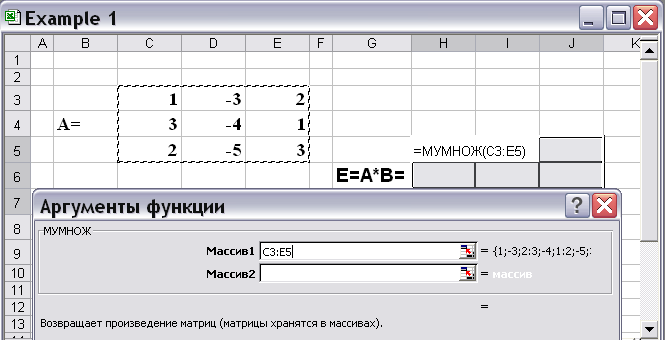
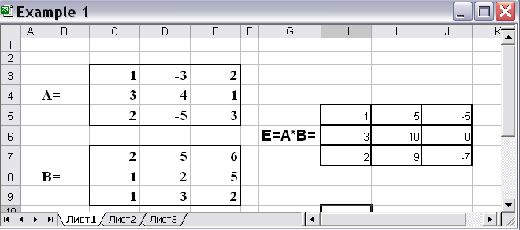
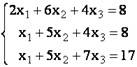
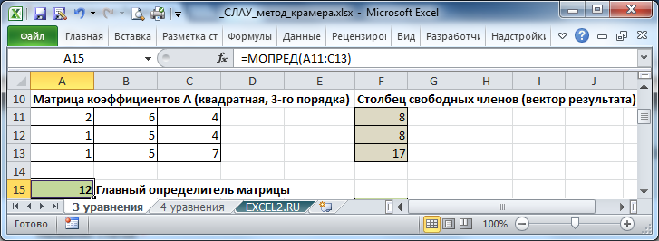
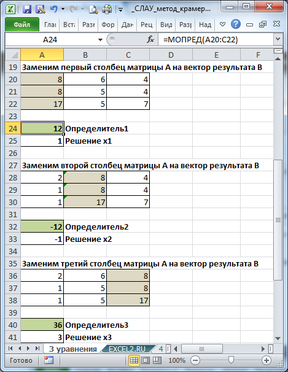
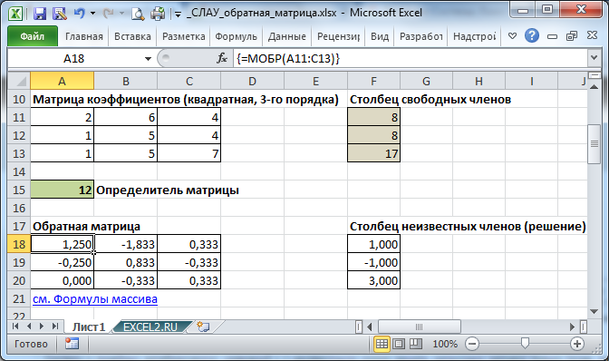
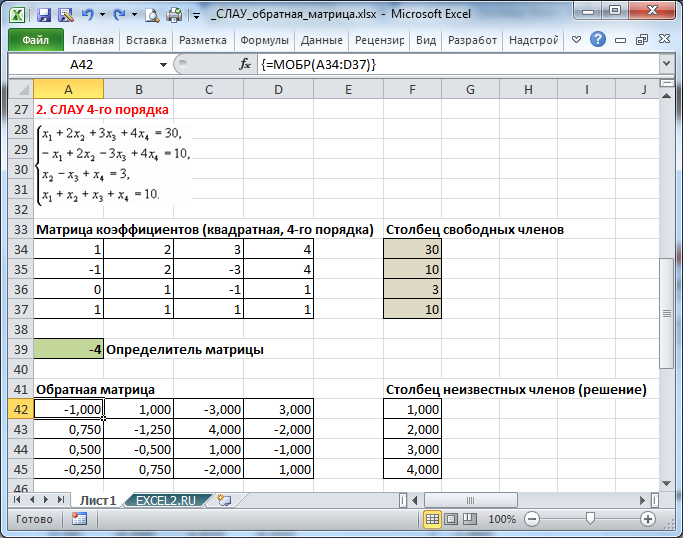

Электронный
практикум
Примеры
Пример 1.
Найдем матрицу С = А + В и D = 4*A, где А и В – матрицы вида:
Рис. 1. Исходные данные для примера
Для нахождения матрицы С запишем в первый элемент результирующей матрицы формулу. Поскольку сложение матриц происходит поэлементно, то первый элемент матрицы С будет суммой первых элементов матриц А и В (рис. 2).
Рис. 2.Cумма первых элементов
После нажатия клавиши «ENTER» в первой ячейке области, отведенной под матрицу С, появится результат сложения. Формулу, составленную для первого элемента, используем для нахождения оставшихся элементов. Для этого формулу необходимо скопировать и «забить» в нужные ячейки. Копирование и вставку можно провести тремя способами:
– поставив курсор в первую клетку, вызвать в пункте главного меню «Правка» подпункт «Копировать/Вставить»;
– правой кнопкой «мышки» нажать на первую ячейку и в появившемся меню выбрать «Копировать/Вставить»;
– воспользоваться «горячими» клавишами: копировать – Ctrl+C; вставить – Ctrl+V.
После копирования (занесения в буфер памяти) формулы, необходимо выделить область результирующей матрицы, в данном случае 3 клетки х 3 клетки, и вставить формулу перечисленными тремя способами или просто нажав клавишу «ENTER».
В результате должна получиться результирующая матрица С (рис. 3).
Рис. 3.Результат сложения матриц
Аналогичным образом получим матрицу D = 4*A (рис. 4).
Рис. 4.Результат умножения матрицы на число
Все перечисленные выше функции можно найти в полном алфавитном списке функций MS Excel, который можно вызвать тремя способами:
– в пункте главного меню «Вставка» выбрать пункт «Функции» (рис. 5).
Рис. 5.
– нажатием на панели инструментов иконки со значком fх (рис. 6).
Рис. 6.
– после ввода в желаемую ячейку символа «=» справа под панелью инструментов появляется выпадающее меню, в котором отображены последние 10 использованных функций (рис. 7 и рис. 8).
Рис. 7.
Рис. 8.
Пример 2.
Найти произведение матриц А и В из примера 1.
Рис. 2.1.Вызов функции МУМНОЖ
В окне функции МУМНОЖ заносятся адреса перемножаемых массивов. Для этого в верхнем окне для адреса первого массива необходимо нажать кнопку и указать выделением на рабочем листе расположение элементов первого массива (рис. 2.2 и 2.3).
Рис. 2.2.

Рис. 2.3.
Аналогично заполнить адрес второго массива в строке «Массив 2» (рис. 2.12).
Рис. 2.4.
Следующей задачей является перенос полученных результатов на рабочий лист. Поскольку в данном действии результатом является не одна ячейка, а девять, то вместо клавиши «ENTER» нажимается комбинация клавиш Ctrl+Shift+Enter. В результате должен получиться заполненный массив Е (рис. 2.5).

Рис. 2.5.
Аналогичным образом производится работа с функцией МОБР, которая служит для нахождения обратной матрицы.
Пример 3.
С помощью Excel найти обратную матрицу для матрицы В.
Рис. 3.1.Нахождение обратной матрицы
В результате нажатия комбинации клавиш (поскольку требуется заполнить не одну ячейку) Ctrl+Shift+Enter в выделенной области будет размещаться обратная матрица для массива В (рис. 3.2).
Рис. 3.2.
Пример 4.
Найти определитель матрицы А.
Рис. 4.1.
Необходимо помнить, что в случае, когда в результате действий над матрицами ответом будет являться массив, а не число, следует следить за выполнением двух требований:1. перед вызовом функции выделять область, в которой ожидается решение;
2.после заполнения необходимой информации в окне таких функций, как МУМНОЖ, МОБР и ТРАНСП, следует нажимать комбинацию Ctrl+Shift+Enter. На вкладке Формулы выберем Вставить функцию, выберем категорию Ссылки и массивы — функция ТРАНСП — ОК.
Пример 5.
Пусть дана матрица А размерностью 3х4, с помощью функции =ТРАНСП() вычислим транспонированную матрицу АТ, причем размерность этой матрицы будет 4х3.
Выделим диапазон Н3:J6, в который будут введены значения транспонированной матрицы.
В диалоговом окне Аргументы функции указываем диапазон массива В3:Е5, содержащего элементы матрицы А. Нажимаем на клавиатуре сочетание клавиш Shift+Ctrl и щелкаем левой кнопкой мыши по кнопке ОК.
Пример 6.
Решим Систему Линейных Алгебраических Уравнений (СЛАУ) методом Крамера в MS EXCEL.

Метод Крамера применяется для решения систем линейных алгебраических уравнений (СЛАУ), в которых число неизвестных переменных равно числу уравнений и определитель основной матрицы отличен от нуля.
Решим систему из 3-х уравнений.
Запишем в ячейки основную матрицу системы и столбец свободных членов.

Рис. 5.1.
Определитель основной матрицы вычислим с помощью формулы =МОПРЕД(A11:C13)
Определитель =12, это означает, что матрица А – невырожденная, то есть, ее определитель отличен от нуля. В этом случае система линейных алгебраических уравнений имеет единственное решение, которое может быть найдено методом Крамера.
Теперь последовательно будем заменять столбцы матрицы А на столбец свободных членов и вычислять соответствующие определители полученных матриц. Отношение определителей позволяет вычислить переменные х.

Рис. 5.2.
Пример 7.
Решим систему из 3-х линейных алгебраических уравнений с помощью обратной матрицы (матричным методом).

Запишем в ячейки основную матрицу системы и столбец свободных членов.

Рис. 6.1.
Систему n линейных алгебраических уравнений с n неизвестными можно решать матричным методом только тогда, когда определитель основной матрицы системы отличен от нуля (в противном случае мы имеем линейно зависимые уравнения и соответственно решение систем не единственное). В нашем случае определитель =12.
Вычислим обратную матрицу с помощью формулы массива МОБР() .
Для этого выделите ячейки A18:C20 , а в Строке формул введите =МОБР(A11:C13) , затем нажмите CTRL+SHIFT+ENTER .
Решение системы уравнений получим умножением обратной матрицы и столбца свободных членов. Перемножить матрицы можно с помощью формулы массива =МУМНОЖ() .
Для этого выделите ячейки F18:F20 , а в Строке формул введите =МУМНОЖ(A18:C20;F11:F13) , затем нажмите CTRL+SHIFT+ENTER .
